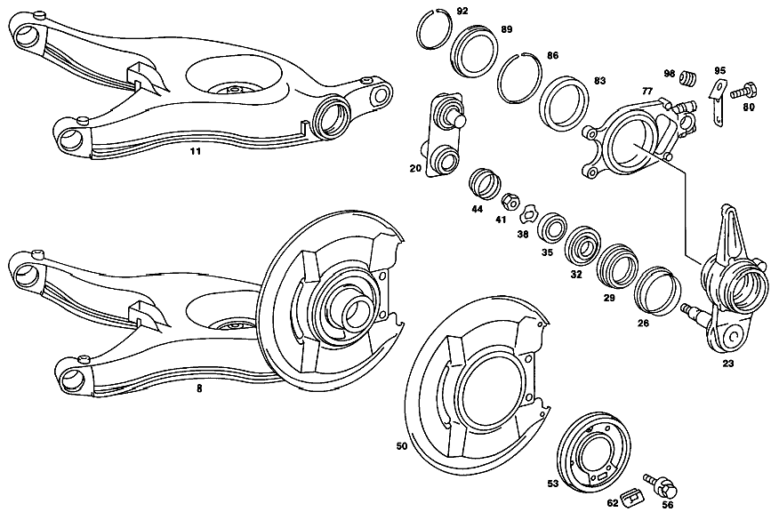

| № | Артикул | Название | Кол. | Примечание |
|---|---|---|---|---|
| 8 | A 126 350 26 05 | Рычаг подвески (HANDLE BAR) | 1 | LEFT COUPLED TRANSVERSE CONTROL ARM, WITH WHEEL BEARING AND COVER PLATE |
| 8 | A 126 350 27 05 | Рычаг подвески (HANDLE BAR) | 1 | RIGHT COUPLED TRANSVERSE CONTROL ARM, WITH WHEEL BEARING AND COVER PLATE |
| 11 | A 126 352 04 04 | - Соединительный рычаг | 1 | СЛЕВА |
| 11 | A 126 352 05 04 | - Соединительный рычаг | - | |
| 11 | A 107 352 19 04 | - РЫЧАГ ТРЕУГОЛЬНЫЙ | 1 | СПРАВА |
| 17 | A 126 352 01 65 | - Резиновая опора (RUBBER BUSHING) | 4 | ДИАГОН. РЫЧАГ НА КРОНШТ. МОСТА |
| 17 | A 123 352 07 65 | - Резиновая опора (RUBBER BUSHING) | 4 | РЕМОНТ. ИСПОЛНЕНИЕ С ЭКСЦЕНТР. ВНУТР. ВТУЛКОЙ |
| 20 | A 107 350 05 38 | Держатель (HOLDER) | 1 | (SHACKLE),FROM COUPLED TRANSVERSE CONTROL ARM TO BRAKE ANCHOR SUPPORT |
| 23 | A 126 350 02 32 | Кулак подвески (WHEEL CARRIER) | 1 | СЛЕВА |
| 23 | A 126 350 03 32 | КУЛАК ЗАДН. ПОДВЕСКИ | 1 | СПРАВА |
| 26 | A 107 357 09 90 | Защитное кольцо (PROTECTIVE RING) | 2 | |
| 29 | A 107 997 02 45 | - Уплотнительное кольцо (SEALING RING) | 2 | |
| 29 | A 107 997 03 45 | - УПЛОТНИТ. КОЛЬЦО | 2 | |
| 32 | A 000 981 58 05 | Конический подшипник (CONE BEARING) | 2 | WHEEL BEARING TO COUPLED TRANSVERSE CONTROL ARM |
| 35 | A 000 981 59 05 | Кон. роликоподшипник (TAPERED ROLLER BEARING) | 2 | |
| 38 | A 107 357 02 75 | Диск (WINDOW) | 2 | |
| 41 | N 913002 016002 | Гайка (NUT) | 2 | M16X1.5 |
| 44 | A 107 357 01 16 | Крышка (CAP) | 2 | |
| 50 | A 107 420 04 44 | - Щиток (COVER SHEET) | 2 | ТОРМОЗ ЗАДНЕГО КОЛЕСА |
| 53 | A 115 423 35 20 | - втулка | 1 | СЛЕВА |
| 53 | A 115 423 36 20 | - втулка | 1 | СПРАВА |
| 56 | N 914004 006002 | - Винт с неспадающей шайбой | 8 | ЗАЩИТНЫЙ ЩИТОК К КУЛАКУ ПОДВЕСКИ |
| 62 | A 107 427 01 96 | - МАНЖЕТА | 2 | |
| 65 | A 123 423 00 06 | - Кронштейн торм. механизма (BRAKE CARRIER) | 2 | ТОРМОЗН. КОЛОДКА |
| 65 | A 123 423 01 06 | - КРОНШТЕЙН | 2 | ТОРМОЗН. КОЛОДКА |
| 65 | A 123 423 02 06 | - КРОНШТЕЙН | 2 | ТОРМОЗН. КОЛОДКА |
| 68 | A 123 990 03 12 | - болт (SCREW) | 4 | BRAKE SHOE SUPPORT TO TRANSVERSE CONTROL ARM |
| 77 | A 126 350 00 32 | - Кронштейн (CARRIER) | 2 | СКОБА ТОРМОЗН. МЕХАНИЗМА |
| 80 | N 000931 008046 | - Винт | - | |
| 80 | N 304017 008018 | - Винт с 6-гранной головкой (HEXAGON HEAD BOLT) | 4 | M8X35 |
| 83 | A 003 981 22 25 | - Рад. шарикоподшипник (DEEP-GROOVE BALL BEARING) | 2 | CALIPER SUPPORT |
| 86 | N 912009 100200 | - Пруж. стопорное кольцо (SNAP RING) | 2 | |
| 89 | A 107 357 11 90 | - Защитное кольцо (PROTECTIVE RING) | 2 | |
| 92 | N 912009 080100 | - Пруж. стопорное кольцо (SNAP RING) | 2 | |
| 95 | A 107 428 00 40 | - Держатель (HOLDER) | 1 | ТОРМОЗНОЙ ШЛАНГ СЛЕВА |
| 95 | A 107 428 01 40 | - Держатель (HOLDER) | 1 | ТОРМОЗНОЙ ШЛАНГ СПРАВА |
| 101 | A 126 350 11 46 | - ФЛАНЕЦ | - | |
| 101 | A 126 350 15 46 | - Комплект фланца (PARTS KIT, FLANGE) | 1 | К-Т ЛЕВЫХ ДЕТАЛЕЙ |
| 101 | A 126 350 12 46 | - ФЛАНЕЦ | - | |
| 101 | A 126 350 16 46 | - Комплект фланца (PARTS KIT, FLANGE) | 1 | К-Т ПРАВЫХ ДЕТАЛЕЙ |
| 104 | A 115 991 05 60 | - Цилиндрический шрифт (CYLINDER PIN) | 2 | |
| 107 | A 000 980 82 02 | - Кон. роликоподшипник | 2 | ПОДШИПНИК КОЛЕСА |
| 110 | A 000 980 42 02 | - Шарикоподшипник (BALL BEARING) | 2 | ПОДШИПНИК КОЛЕСА |
| 113 | A 115 357 12 62 | - Прижимная шайба (PRESSURE DISK) | 2 | |
| 116 | A 005 997 16 46 | - Уплотнительное кольцо (SEALING RING) | 2 | СНАРУЖИ |
| 119 | A 007 997 35 47 | - Уплотнительное кольцо (SEALING RING) | 2 | ВНУТР. |
| 122 | A 115 353 01 42 | - Проставочная втулка (SPACER BUSH) | 2 | |
| 125 | A 115 357 00 26 | - Шлицевая гайка (SLOTTED NUT) | 2 | |
| 128 | A 123 350 00 68 | Ремк-т полуоси зад. моста (REPAIR KIT, RR AXLE SHAFT) | 2 | ОПОРА ЗАДН. КОЛЕСА |
| 131 | A 115 352 05 76 | Диск (WINDOW) | 4 | КОРПУС МОСТА НА КРОНШТЕЙНЕ ЗАД. МОСТА |
| 134 | A 094 990 79 10 | Гайка (NUT) | 4 | КОРПУС МОСТА НА КРОНШТЕЙНЕ ЗАД. МОСТА |
| 137 | N 000960 016164 | Винт | - | M16X1.5X85-8.8 |
| 137 | N 000960 016250 | Винт (SCREW) | 4 | ДИАГОН. РЫЧАГ НА КРОНШТ. МОСТА |
| 140 | N 000936 016012 | ГАЙКА | 4 | ДИАГОН. РЫЧАГ НА КРОНШТ. МОСТА |
| 143 | N 912004 016101 | Пружинное кольцо (SPRING LOCK WASHER) | 4 | ДИАГОН. РЫЧАГ НА КРОНШТ. МОСТА |
| 146 | A 123 990 32 01 | болт (SCREW) | 2 | ПОЛУОСЬ НА ФЛАНЦЕ ПОЛУОСИ ЗАДН. МОСТА M 8 X 85 |
| 152 | A 115 357 03 53 | втулка (SLEEVE) | 2 | AXLE SHAFT TO WHEEL BEARING 72 MM |
| 152 | A 126 357 00 53 | втулка (SLEEVE) | 2 | ПОЛУОСЬ НА ФЛАНЦЕ ПОЛУОСИ ЗАДН. МОСТА 67 MM |
| A 115 586 02 35 | РЕМКОМПЛЕКТ | - |
Позиций: 59 · подписано на схемах: 58 · колесо — плавный зум в курсор, перетаскивание — пан, двойной клик — зум, клик по артикулу — скопировать.